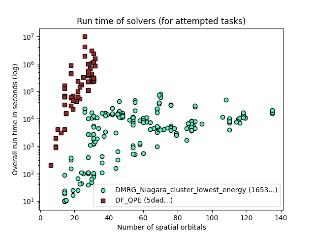

Report created on 2024-12-18-12-11
https://github.com/isi-usc-edu/qb-gsee-benchmark
Input data: aggregated_solver_labels_2024-12-18-10-18.csv, last modified Wed Dec 18 11:19:33 2024
Input data: Hamiltonian_features.csv, last modified Mon Dec 16 09:53:12 2024
WARNING! We only have features calculated for 229/230 Hamiltonians. This report is based on partial results!
number of problem_instances: 82
problem_instance.json with the most tasks: 16 (mo_n2_pincer/8a3787cc-d3d0-42a8-d9a9-7de2aed45208)
number of Hamiltonians (i.e., tasks): 230
minimum number of orbitals: 6
median number of orbitals: 53.5
maximum number of orbitals: 135
number of unique participating solvers: 2

solver_short_name: DMRG_Niagara_cluster_lowest_energy
performance_metrics_uuid: 9fa6c773-01b3-4723-afa0-5558e91fddaa
creation_timestamp: 2024-12-18T15:38:21.126384+00:00
number_of_problem_instances: 82
number_of_problem_instances_attempted: 76
number_of_problem_instances_solved: 43
number_of_tasks: 230
number_of_tasks_attempted: 192
number_of_tasks_solved: 142
number_of_tasks_solved_within_run_time_limit: 192
number_of_tasks_solved_within_accuracy_threshold: 142
max_run_time_of_attempted_tasks: 80820.729907066
sum_of_run_time_of_attempted_tasks: 1824772.0337238186
solvability_ratio: 0.0
f1_score: [0.7558139534883721, 0.8531468531468531]
ml_metrics_calculator_version: 1
TODO: put some charts in here!
solver_short_name: DF_QPE
performance_metrics_uuid: e9459073-db4a-4ca5-a6c4-746a62762cb9
creation_timestamp: 2024-12-18T15:38:21.799198+00:00
number_of_problem_instances: 82
number_of_problem_instances_attempted: 9
number_of_problem_instances_solved: 3
number_of_tasks: 230
number_of_tasks_attempted: 65
number_of_tasks_solved: 26
number_of_tasks_solved_within_run_time_limit: 26
number_of_tasks_solved_within_accuracy_threshold: 65
max_run_time_of_attempted_tasks: 9900914.966049999
sum_of_run_time_of_attempted_tasks: 37957820.57215899
solvability_ratio: 0.009
f1_score: [0.995049504950495, 0.9629629629629629]
ml_metrics_calculator_version: 1
TODO: put some charts in here!